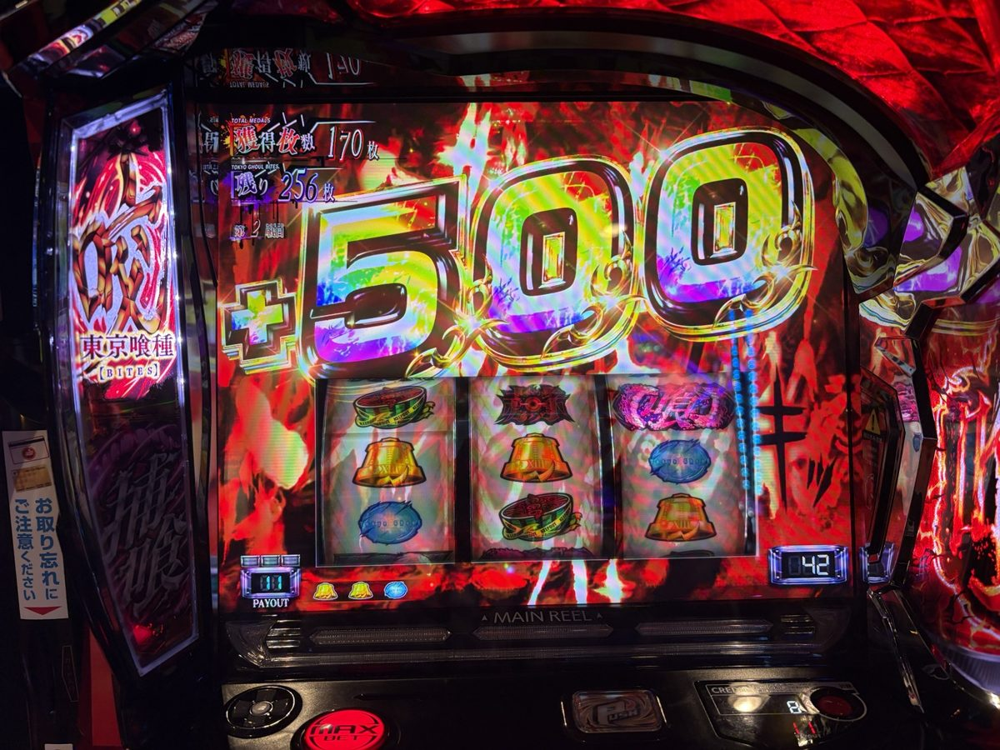
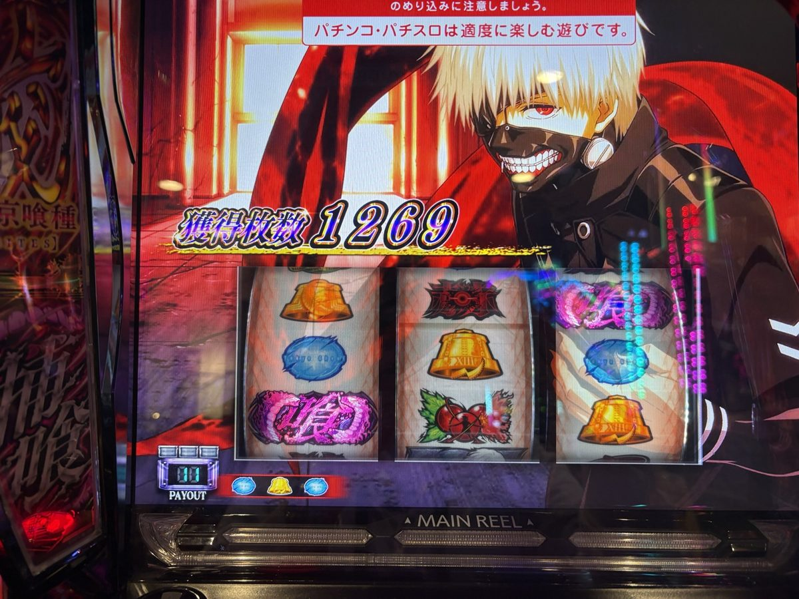
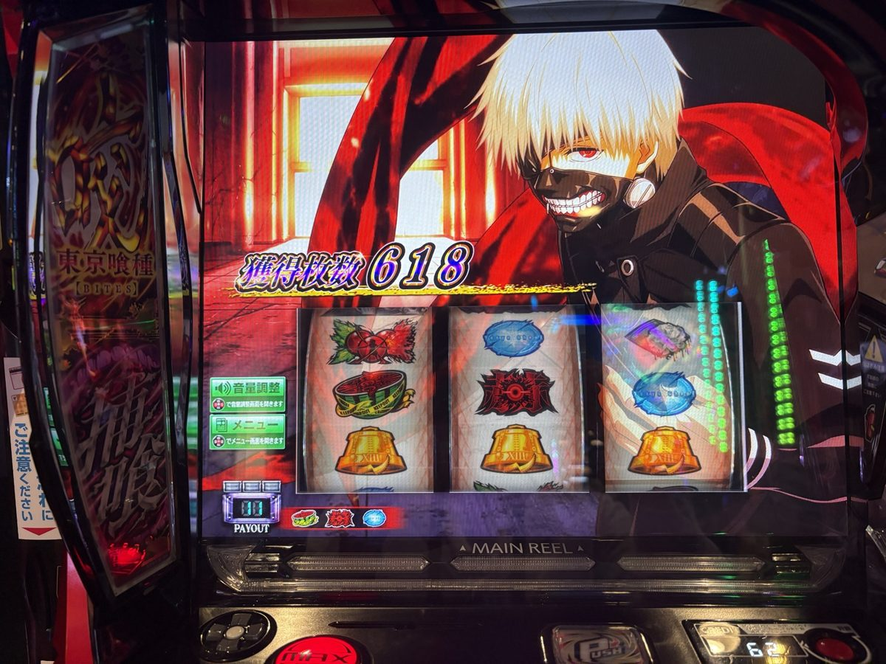
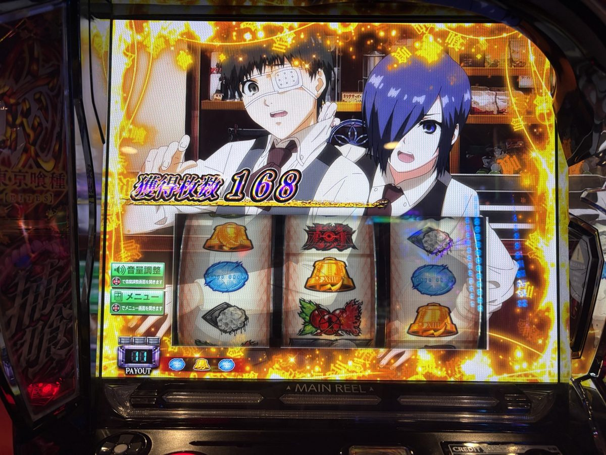
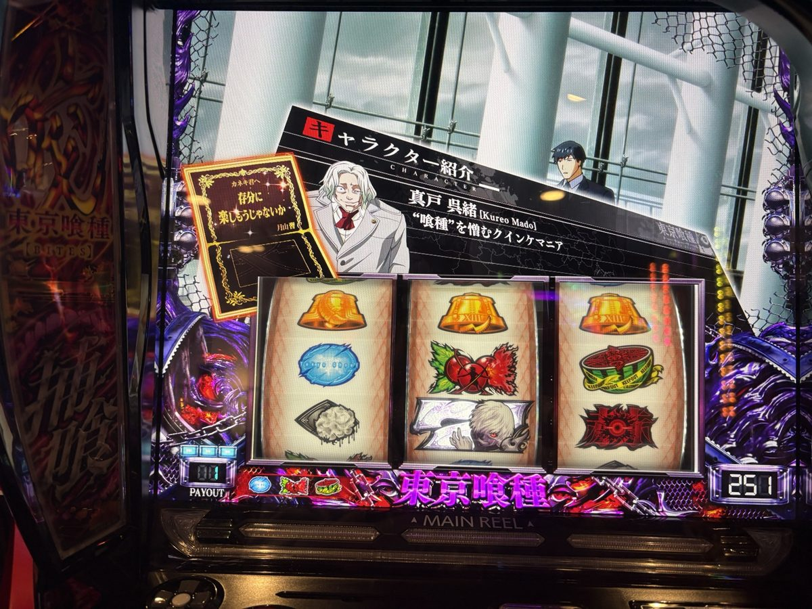
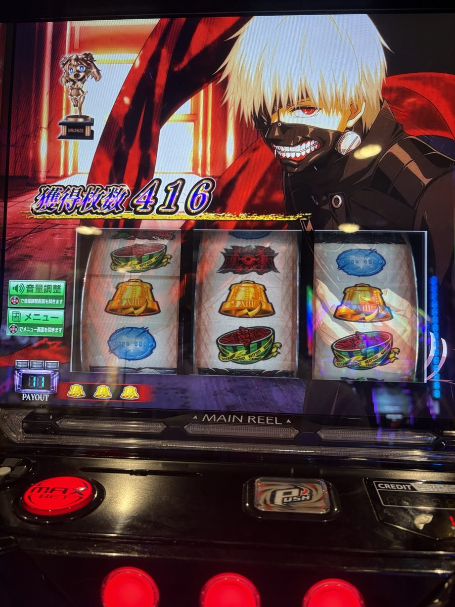
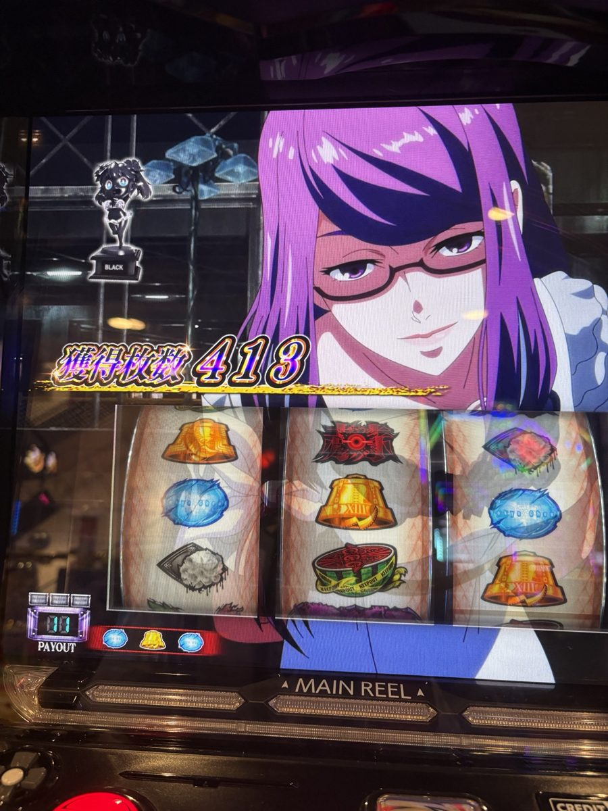
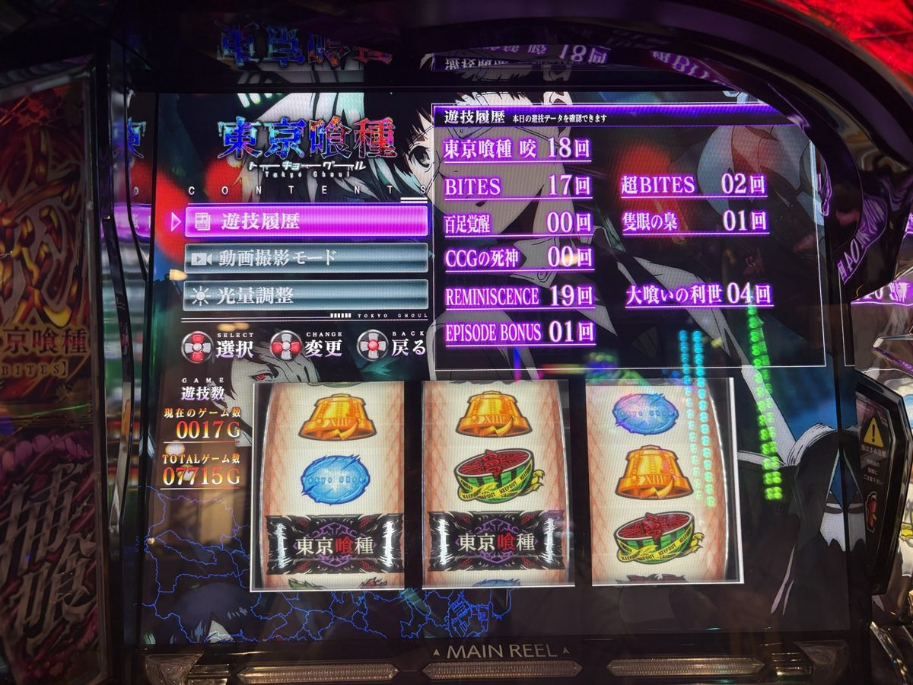

機種別実戦記録
L東京喰種実戦｜弱チェリー＋500枚から逆転。7,715Gで＋979枚
楽園池袋店グリーンサイドで7,715G。投資1,610枚・回収2,589枚、＋979枚。金枠と月山招待状、終盤の＋500枚を写真で確認し、設定4的な動きという本人の感想と解析を分けて振り返ります。
実戦日：2026年10月19日／実設定は未公表最終更新：2026年10月20日
7,715G実戦の結末は＋979枚
2026年10月19日、楽園池袋店グリーンサイドで「L東京喰種」を実戦。抽選68番からの一日を、本人のコメントと実機写真で振り返ります。
序盤の上位CZ、AT間約1,000Gのハマり、伸びないAT、そして終盤の弱チェリーから＋500枚。投資1,610枚・回収2,589枚で、最終収支は＋979枚でした。
| 項目 | 結果 |
|---|
| 実戦日 | 2026年10月19日（月） |
|---|
| 店舗 | 楽園池袋店グリーンサイド |
|---|
| 抽選 | 68番 |
|---|
| 投資 | 1,610枚 |
|---|
| 回収 | 2,589枚 |
|---|
| 収支 | ＋979枚 |
|---|
| 総ゲーム数 | 7,715G |
|---|
| 通常時ゲーム数 | 不明（総Gとは分ける） |
|---|
| 最終ヤメ時 | 17G |
|---|
投資・回収・抽選は本人申告。総ゲーム数と17Gは最終遊技履歴の写真でも確認。貸出・交換条件は未確認のため円換算はしていません。
開始6Gの赫眼、通常CZの苦戦、後半の挽回
きむちゃんねる「最強の3人」の撮影見学も兼ねた訪店。本人はリコリス・リコイルかマギアレコードを考えていましたが、店内のおすすめ表示を見て東京喰種へ変更したと振り返っています。番組を見た感想と台選びの経緯は、下の本人コメントにそのまま残しています。
開始6Gで赫眼状態、精神世界20Gを獲得したもののAT非当選。その後は上位CZからの当選やリプレイ契機の当選が絡み、序盤は順調という感触でした。
リプレイ契機は本人の実戦記録として採用しています。写真だけで内部抽選を判定したものではなく、外部解析上の全当選経路を確定した記述ではありません。
一方で、通常CZには苦戦し、AT間約1,000Gのハマりも。後半は通常CZ成功が続きましたが、ATは「7連続ほど200枚前後で駆け抜ける」という展開だったそうです。
本人コメントの「通常CZでのAT当選確率25%」は途中の突破成績を振り返った表現です。最終の本人確定記録では通常CZ19回中10回成功、突破率52.6%でした。失敗が続いたこと自体で次のCZの成功確率が上がるわけではありません。
弱チェリーから＋500枚、33G復帰を含め1,269枚
終盤、確定補正版のAT⑯に当たる区間で、弱チェリーを契機に＋500枚。写真には喰熱（ショクアツ）を経た＋500枚表示が残っています。バトル勝利なども重ね、一度は1,068枚で終了しました。

タップして拡大 ↗終盤の＋500枚。弱チェリー契機という部分は本人申告に基づきます。 撮影・出典：シュウ３。その後、33Gで金木研のエピソードを経由してATへ復帰したとの本人報告。復帰後の獲得表示は1,269枚でした。1,068枚と1,269枚は同じ一連の表示経過として扱い、足し合わせていません。

タップして拡大 ↗33G復帰後の累計1,269枚。回収2,589枚や一日の収支とは別の値です。 撮影・出典：シュウ３。最終ATの獲得表示は618枚。最後は17Gで実戦を終了しました。

タップして拡大 ↗最終ATは618枚表示。最終のヤメ時17Gは遊技履歴で別に確認しています。 撮影・出典：シュウ３。金枠と月山招待状。設定4以上濃厚の根拠を分ける
取得できた写真では、金木研＆霧嶋董香の金枠AT終了画面と、月山招待状「存分に楽しもうじゃないか」を確認できました。なな徹の対象機記事では、いずれも設定4以上濃厚とされています。［解析出典］

タップして拡大 ↗金木研＆霧嶋董香の金枠。背景の設定示唆と、獲得168枚そのものは別です。 撮影・出典：シュウ３。
タップして拡大 ↗月山招待状「存分に楽しもうじゃないか」。終了画面とは別種類の示唆として扱います。 撮影・出典：シュウ３。| 写真で確認したもの | 解析媒体の説明・今回の扱い |
|---|
| 金木研＆霧嶋董香（金枠） | 設定4以上濃厚（なな徹）。4・5・6の識別にはならない |
|---|
| 月山招待状「存分に楽しもうじゃないか」 | 設定4以上濃厚（なな徹）。金枠と別の表示 |
|---|
| BRONZEトロフィー | 設定2以上濃厚（必勝本）。高設定確定へ広げない |
|---|
| BLACKトロフィー | 次回のトロフィー出現を示す予告。黒単独で特定設定を断定しない |
|---|
本人の「設定456の画面を2回ほど」はそのまま残しています。今回、写真と解析を対応づけた4以上濃厚の根拠は上の2種類で、同じ終了画面が2回出たと読み替えてはいません。実際の設定は未公表です。
銅・黒トロフィーの写真を見る

タップして拡大 ↗BRONZEの文字を確認。獲得416枚はトロフィー示唆と別です。 撮影・出典：シュウ３。
タップして拡大 ↗BLACKの文字を確認。黒自体を設定4・5・6の確定表示とは扱いません。 撮影・出典：シュウ３。トロフィーの対応は必勝本の対象機解説を参照。なな徹のトロフィー表には「他機種を参考」の注記があるため、媒体の説明をメーカー公式の確定値へ格上げしていません。
設定4的な動き？ 公表値と実戦値の比較範囲
写真の示唆を解析媒体の説明に当てはめると、設定4・5・6が候補になります。ただし、設定4が統計的に最有力とまでは判断できません。「設定4的な動き」は本人の体感として、解析による評価と分けます。
設定1〜6のAT・CZ確率と集計上の制約
下表はなな徹の対象機記事に掲載された媒体調べの値です。メーカー公式の公表値とは扱いません。［解析出典］
| 設定 | AT初当たり | CZ合算 | REMINISCENCE | 大喰いの利世 |
|---|
| 1 | 1/394.4 | 1/262.6 | 1/300.5 | 1/2079.1 |
|---|
| 2 | 1/380.5 | 1/255.6 | 1/295.1 | 1/1906.5 |
|---|
| 3 | 1/357.0 | 1/246.5 | 1/287.6 | 1/1722.8 |
|---|
| 4 | 1/325.9 | 1/233.1 | 1/276.7 | 1/1478.9 |
|---|
| 5 | 1/291.2 | 1/216.4 | 1/262.7 | 1/1226.6 |
|---|
| 6 | 1/261.3 | 1/203.7 | 1/251.2 | 1/1074.9 |
|---|
総7,715GにはAT中も含まれます。通常時G数を分離できないため、今回のAT初当たり・CZ出現率・大喰いの利世出現率は算出不可です。AT当選18回には引き戻し3回を含みます。大喰いの利世4回を7,715Gで割った値を、設定別の出現率と比較していません。
| 評価したい項目 | 今回の資料で言える範囲 |
|---|
| AT初当たり | 実機の咬18回を初当たり18回と扱わない。通常Gも不明で算出不可 |
|---|
| 通常CZ突破率 | 19回中10回成功・9回失敗。最終成功率52.6% |
|---|
| 大喰いの利世 | 4回中4回成功（本人確定記録）。通常G不明につき出現率は算出不可 |
|---|
| 設定4・5・6の比較 | 設定示唆は3候補を残す。差枚・ATの伸びだけで5・6を否定しない |
|---|
ATとCZは当選経路が重なるため、独立した証拠として掛け合わせていません。精密に見える設定別信頼度も作らず、今回の結論は「設定4以上濃厚とされる示唆を写真で確認。4・5・6の識別はできない」です。
AT当選履歴・獲得枚数・終了画面
本人が補正・確定したAT18回の記録です。引き戻し3回も、それぞれAT当選1回として数えています。リプレイ直撃は本人の実戦上の確定記録で、外部解析上の内部抽選を証明するものではありません。
表は横にスクロールできます。設定示唆は太字で表示。画面の示唆は解析媒体の説明によるもので、店舗公表の実設定とは分けています。［終了画面］ ［トロフィー］
AT18回の確定補正版| AT | 当選G数 | 当選契機 | 獲得表示 | 終了画面・備考 |
|---|
| 1回目 | 93G | 超高確・上位CZ | 416枚 | デフォルト画面・ブロンズトロフィー |
|---|
| 2回目 | 122G | 432pt・上位CZ | 413枚 | 設定1否定画面 |
|---|
| 3回目 | 17G | 超高確・通常CZ | 190枚 | デフォルト画面・ブロンズトロフィー |
|---|
| 4回目 | 244G | リプレイ直撃 | 164枚 | デフォルト画面・ブロンズトロフィー |
|---|
| 5回目 | 98G | 超高確・通常CZ | 2,456枚 | デフォルト画面 |
|---|
| 6回目 | 324G | 333pt・通常CZ | 1,325枚 | 高設定示唆（弱）画面 |
|---|
| 7回目 | 461G | 511pt・上位CZ | 198枚 | デフォルト画面 |
|---|
| 8回目 | 33G | 引き戻し | 322枚※ | デフォルト画面・前回枚数の引継ぎあり |
|---|
| 9回目 | 323G | 天国準備・343pt・通常CZ | 207枚 | 設定1否定画面 |
|---|
| 10回目 | 106G | 強チャンス目・通常CZ | 169枚 | デフォルト画面 |
|---|
| 11回目 | 273G | 283pt・通常CZ | 215枚 | デフォルト画面 |
|---|
| 12回目 | 101G | 超高確・通常CZ | 168枚 | 金木研＆霧嶋董香・金枠画面（設定4以上濃厚） |
|---|
| 13回目 | 82G | 82pt・通常CZ | 241枚 | デフォルト画面 |
|---|
| 14回目 | 33G | 引き戻し | 355枚※ | デフォルト画面・前回枚数の引継ぎあり |
|---|
| 15回目 | 134G | 144pt・通常CZ | 193枚 | 奇数設定示唆画面 |
|---|
| 16回目 | 137G | 超高確・通常CZ | 1,068枚 | デフォルト画面・弱チェリー＋500枚乗せあり |
|---|
| 17回目 | 33G | 引き戻し | 1,269枚※ | デフォルト画面・金木研エピソード経由・前回枚数の引継ぎあり |
|---|
| 18回目 | 127G | 超高確・上位CZ | 618枚 | デフォルト画面・最終AT |
|---|
※8回目・14回目・17回目は直前ATから引き継いだ累計表示。単独獲得として足しません。7回目の198枚→8回目の322枚は＋124枚、13回目の241枚→14回目の355枚は＋114枚、16回目の1,068枚→17回目の1,269枚は＋201枚です。
重複を除いたAT獲得枚数の合計は8,480枚。これはAT区間の獲得表示を集計した指標で、実戦回収2,589枚・投資1,610枚・最終差枚＋979枚とは別です。
CZ・ATの最終集計
| 区分 | 回数 | 成功／失敗 | 成功率 |
|---|
| 通常CZ | 19回 | 10回／9回 | 52.6% |
|---|
| 上位CZ | 4回 | 4回／0回 | 100% |
|---|
| CZ全体 | 23回 | 14回／9回 | 60.9% |
|---|
AT当選は通常CZ10回＋上位CZ4回＋リプレイ直撃1回＋引き戻し3回＝18回。CZ23件・直撃1件・引き戻し3件の全27イベントに対応します。通常時G数は不明のため、総7,715Gを分母にした初当たり確率は算出していません。
最終遊技履歴と計数の注意

タップして拡大 ↗最終遊技履歴。総7,715Gと終了17G、各機能の回数を確認できます。 撮影・出典：シュウ３。| 実機の表示項目 | 回数 |
|---|
| 東京喰種 咬 | 18回 |
|---|
| BITES | 17回 |
|---|
| 超BITES | 2回 |
|---|
| 百足覚醒 | 0回 |
|---|
| 隻眼の梟 | 1回 |
|---|
| CCGの死神 | 0回 |
|---|
| REMINISCENCE | 19回 |
|---|
| 大喰いの利世 | 4回 |
|---|
| EPISODE BONUS | 1回 |
|---|
本人の確定補正により、引き戻し3回を含むAT当選は18回に整理できました。以前の手動15回は引き戻しを別ATとして数えていなかった記録です。18回をすべて独立した初当たりと扱うことはしません。
当選G数・獲得枚数・終了画面は、上の本人確定補正版で対応付けています。7,715Gは総ゲーム数、各ATの獲得表示は区間の表示、＋979枚は投資と回収から求めた最終収支です。
確認元・記録の範囲
実戦日：2026年10月19日。本人の実戦メモ・完成稿・当日の写真に基づきます。最終履歴と掲載8枚は原画像を照合し、公開コピーだけ縮小・EXIF除去しています。投資・回収は本人申告です。
終了画面・トロフィーの再確認日：2026年10月20日。総Gから通常Gを推測していません。通常CZ成功10回とAT18回は本人確定補正版に更新しました。本人コメントは誤字「実践」と演出名「かくがん」の表記だけを整えました。
記録の変更履歴
2026年10月20日：本人確定補正版を受領。旧版の「手動AT15回・18回との差は未解消」「通常CZ最終成功率は算出不可」を更新。引き戻し3回を個別に数えたAT18回、通常CZ成功10/19回、上位CZ成功4/4回を掲載しました。終盤の＋500枚は旧手動番号AT⑭から確定番号AT⑯へ対応を訂正。元の本人コメントは変更していません。
引き戻しの累計表示を区別し、AT獲得8,480枚と回収2,589枚を分けました。旧版で未解消としていた点は、この確定補正に置き換えています。
本人コメントを読む前の補足
以下はシュウ３本人のコメントです。「上3つは固いだろう」「設定456」「設定4的な動き」は実戦中の見立てと感想で、店舗が設定を公表した記録ではありません。
「しかし、確率は収束するもの」は今回後半の成績が改善したという体感表現です。失敗後に成功が保証される法則や、続行すれば損失を取り戻せるという意味には扱いません。25%も途中の成績の表現で、最終突破率とは区別しています。